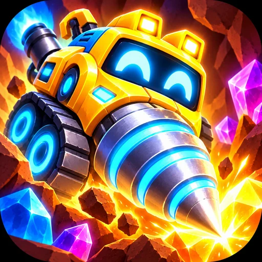

Abrite camino.
Excavá entre bloques y descubrí los cristales que esconde el subsuelo.

CORERUSHPOR LUBELLUM STUDIOSAVENTURA BAJO TIERRA · ANDROID
Un taladro. Un mundo por descubrir.
Y algo enorme que no quiere dejarte salir.
Gratis · Contiene anuncios y compras en la app
CADA EXPEDICIÓN CUENTA
Perforá el terreno, juntá cristales y volvé al taller para mejorar tu equipo. Cada regreso te prepara para un descenso más profundo.
Excavá entre bloques y descubrí los cristales que esconde el subsuelo.
Invertí los recursos de tus expediciones en mejorar el taladro y tu equipamiento.
Superá obstáculos, esquivá criaturas y escapá de la amenaza del Devorador.
ASÍ SE VE LA AVENTURA
Explorá las imágenes de la ficha oficial.
Tocá una para verla en grande.
Deslizá para ver más imágenes.
TU PRÓXIMA EXPEDICIÓN
Core Rush: Taladro y minería
Disponible para Android.